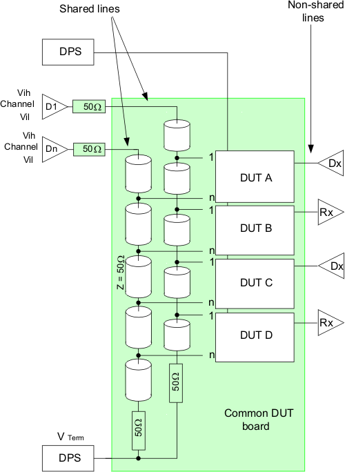

Shared drivers via daisy chain connection
This topic explains driver sharing using four daisy-chained devices as an example.
Termination
A daisy chain line needs to be terminated at the end to eliminate signal reflections.
Because the line impedance is 50 Ω, a termination resistor of 50 Ω is used. That termination resistor is connected to a termination voltage which usually is equal to the device's reference voltage. This termination voltage is supplied by a DPS pin. The "cold" end of the termination resistors of all daisy chained lines can be connected to the same power supply. Decoupling capacitors (bypass capacitors) short AC signals to ground.
Level and timing
Setting up the levels for shared transmission lines needs special consideration, because of termination conditions. A daisy chain line can be treated like a fly-by connected line. The series resistor in the driver and the termination resistor form a voltage divider for the device input which is connected via a stub.
Example
The following figure shows as an example. Two driving pins are shared by four devices (DUT A to D) each on a daisy chain.
- Each transmission line is terminated by a 50 Ω serial resistor.
- The termination resistors are dotted to a common DPS pin that provides the termination voltage VTerm and the AC ground.
- The DPS pins supplying the devices' operating voltage are not shared between the four devices.
Each DUT has non-shared connections in addition to the shared connections. For example DUT output lines are never shared. But there may be DUT inputs, such as clock, that are not shared. Keep this in mind when timing is discussed.
In the example shown below four device sockets are mounted on a common DUT board forming a test site cluster.

The connections from driver to device inputs and further on to termination form transmission lines with an impedance of 50 Ω. These lines have stubs that connect the DUT inputs to the daisy chain. For example, all DUT pins "1" share driver 1 (D1). All input pins "n" share driver n (Dn).
Each driver "sees" a series resistor of 50 Ω followed by a stub connecting the device input followed by a termination resistor of 50 Ω. This is equivalent to a fly-by connection, where the DUT pin is connected to two channels - one driving and one terminating.
All resistors at the end of a group of shared lines are dotted together and are connected to a low impedance voltage source. This voltage source provides an offset voltage Vterm.
Considering the electrical conditions described above, the voltage at the device input pins can be estimated to be at about half the voltage difference between the driver output voltage and the termination voltage.
Functional changes
- Introduced before SmarTest 6.3.2